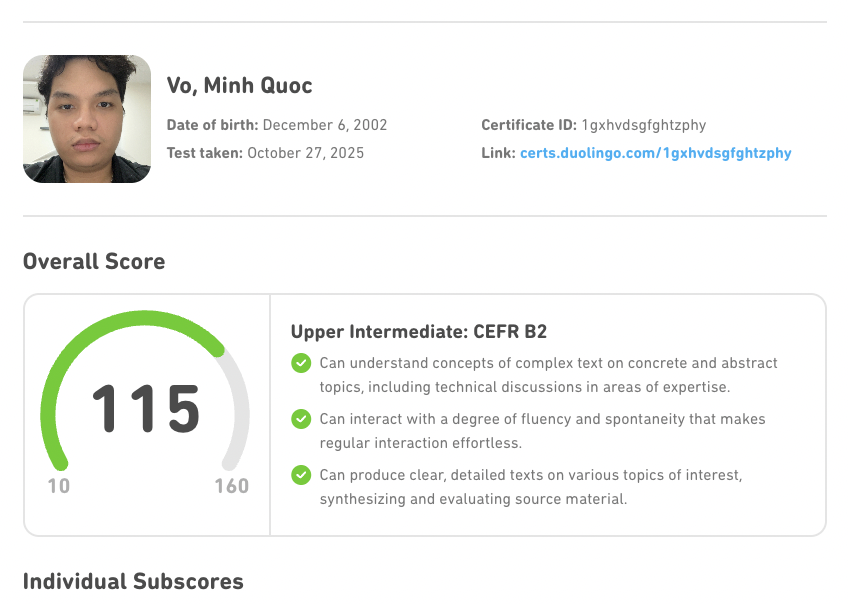

Ethan Vo
.jpg)
Personal Statement
As a passionate student of programming and system design, I possess good English skills for effective communication in both work and daily life. I am highly active in learning and solving problems, demonstrating a proactive approach to challenges. One of my key strengths is my proficiency in the JavaScript language, where I excel in developing innovative solutions. My adaptability to fast-paced work environments aligns with my goal of becoming a full-fledged Software Engineer, constantly pushing the boundaries of my capabilities to achieve professional excellence.
Education
-
University of Greenwich - Bachelor of Science in Computing (2020 - 2024)
-
Relevant Courses
- Enterprice Web Software Development
- Requirement Management
- Mobile Application Design and Development
- Human Computer and Interaction Design
- Final Year Project
- On The Job Training
Personal Projects
-
Ticketing System based-on Micro-service Architecture
August 2023 - November 2023
- Architect and developed large, scalable app with a collection of micro-services by using Docker, Kubernetes, NATS streaming service, Ingress Nginx, MongoDB.
- Shorten system construction time effectively through code reuse using custom NPM packages.
- Build the Server-Side rendering app to render data received from backend using React.js.
- Resolve concurrency issues in distributed system environments to ensure data consistency by ensuring event ordering based on the version to which they are attached with quality check at testing phase.
- Write comprehensive tests accurately and effectively to ensure each services works as designed using Jest that resulted in an overall code coverage of over 80%.
- Pay close attention to detail in coding, testing, and documentation to ensure the quality of the project deliverables through teacher-verified report writing.
- Technologies: JavaScript, TypeScript, MongoDB, React.js, Kubernetes, Docker, NATS Streaming.
-
Blog Website
November 2022 - December 2022
- Size of team: 7 members.
- Role of mine: Backend engineer and Frontend engineer.
- Design and built the server-side of an application, which powers the app's logic, database, and integrations with other systems using JavaScript, Node.js, ExpressJS, MongoDB.
- Integrate the use of 3rd party API into the system to shorten system build time and to ensure proposed features work effectively using Cloudinary and EmailJS.
- Join in building the highly-responsive interface for user authentication feature using React.js.
- Adapt to changing roles from Backend engineer to Frontend engineer during the development process to support team to achieve project goals.
- Technologies: JavaScript, MongoDB, Node.js, React.js.
Certifications
-

-
LG Cybersecurity Certificate
Other